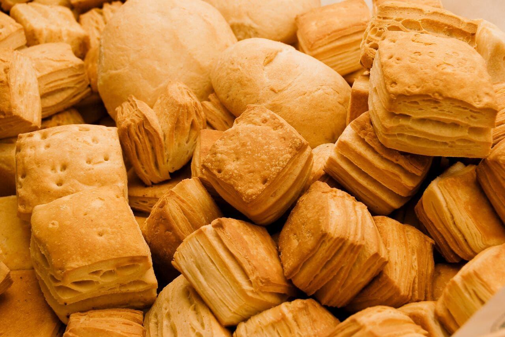
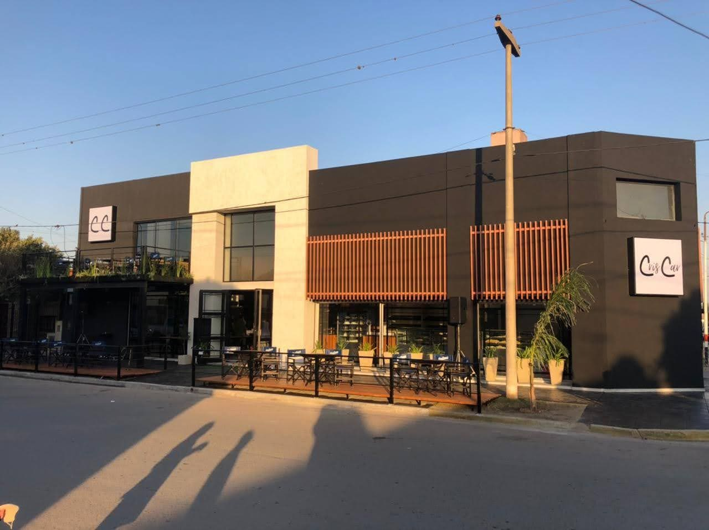
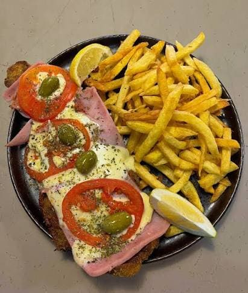

Panificados
Medialunas, criollos, facturas, panes y especialidades recién horneadas todos los días.
Ver másPanadería • Cafetería • Restaurante
Elaboramos diariamente panificados artesanales, facturas, medialunas, tortas y especialidades para acompañar cada momento del día.
También ofrecemos desayunos, meriendas, almuerzos y cenas para disfrutar en nuestros locales.

Elaboramos cada día productos frescos y artesanales para acompañarte en cualquier momento.

Medialunas, criollos, facturas, panes y especialidades recién horneadas todos los días.
Ver más
Café, capuchino, submarino, licuados e infusiones para disfrutar en un ambiente cálido.
Ver más
Pizzas, hamburguesas, sándwiches y platos elaborados para compartir en familia.
Ver más